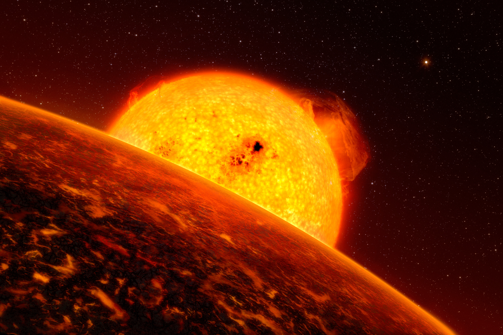

likely a lava exoplanet
Overview
Lava worlds are rocky exoplanets that orbit so close to their star that part or all of their surface is thought to be molten. Most known examples are ultra-short-period planets, completing an orbit in under a day, close enough that starlight alone can heat their surface past the melting point of most silicate rock.
Formation
Lava worlds are thought to form as rocky planets or the stripped cores of former mini-Neptunes, then migrate inward to an extremely close orbit, or in some cases may have always occupied a tight orbit from their earliest formation. Any original atmosphere is expected to be lost quickly at such close range, leaving a bare rocky surface exposed directly to starlight.
Physical characteristics
A tidally locked lava world typically shows an extreme temperature difference between its permanent dayside, hot enough to melt rock, and its nightside, which can be cool enough for rock vapour to condense and rain back down as it drifts around from the dayside. This creates one of the most extreme climate contrasts known on any planet.
Atmosphere
Rather than a conventional gas atmosphere, some lava worlds are thought to have a thin "atmosphere" made of vaporised rock, evaporating from the molten dayside and condensing again once it drifts to cooler regions. Observations of the lava world K2-141 b suggest winds may carry this rock vapour toward the nightside, where models predict it could fall as mineral rain.
Notable examples
Janssen (55 Cancri e), one of the best studied lava worlds, has a dayside temperature estimated at around 2,000°C and may have a surface of molten rock or even liquid lava, with earlier speculation that its interior could be rich in carbon, though this remains debated. CoRoT-7 b, discovered in 2009, was the first rocky exoplanet confirmed outside the Solar System and is thought to have a similarly molten dayside.
Detection
Lava worlds are typically found through the transit method, and their extreme dayside heat can sometimes be measured directly by observing infrared light emitted by the planet itself as it passes behind its star, a technique called secondary eclipse spectroscopy. This has allowed astronomers to map rough temperature differences across a lava world's surface without ever seeing it directly.